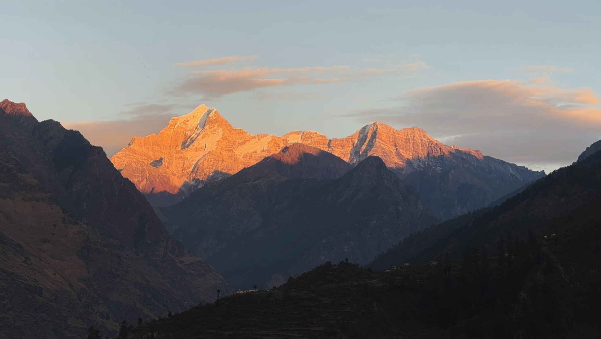
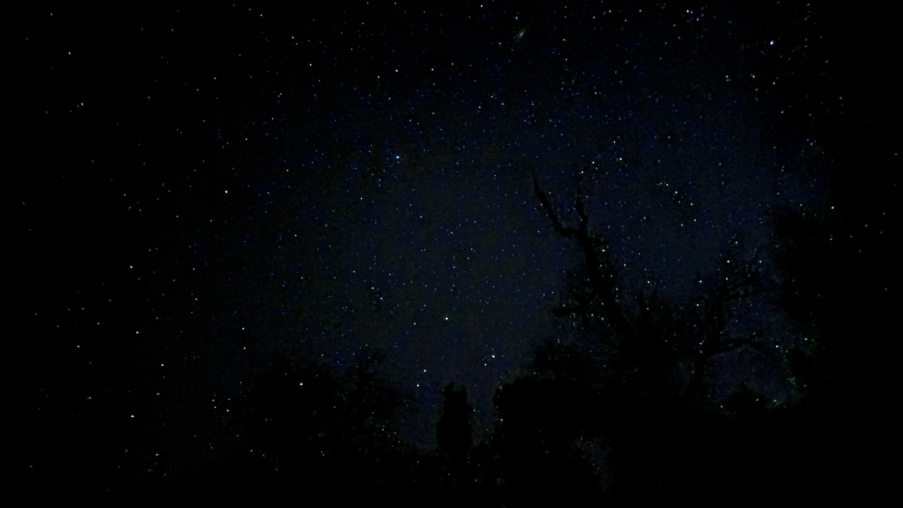
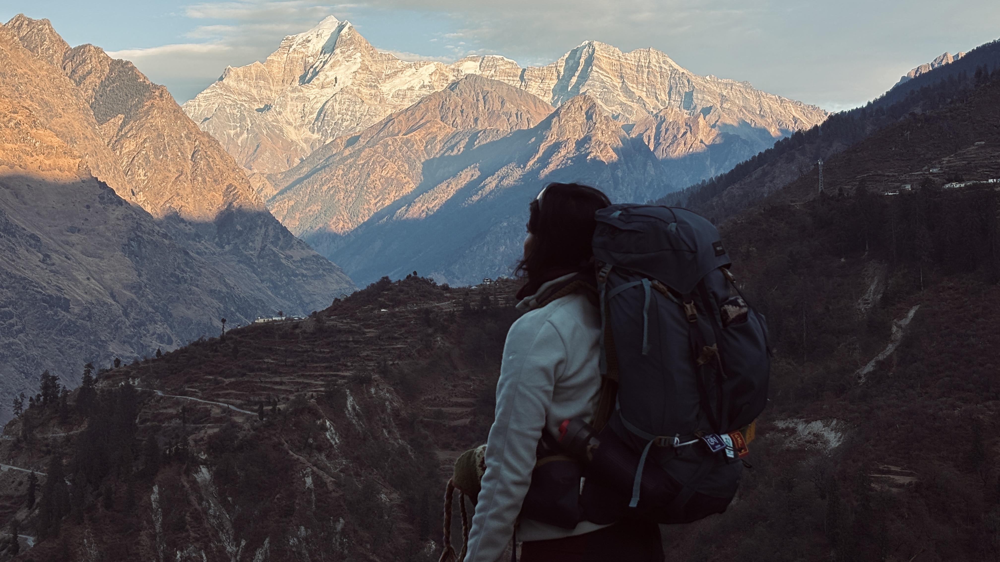
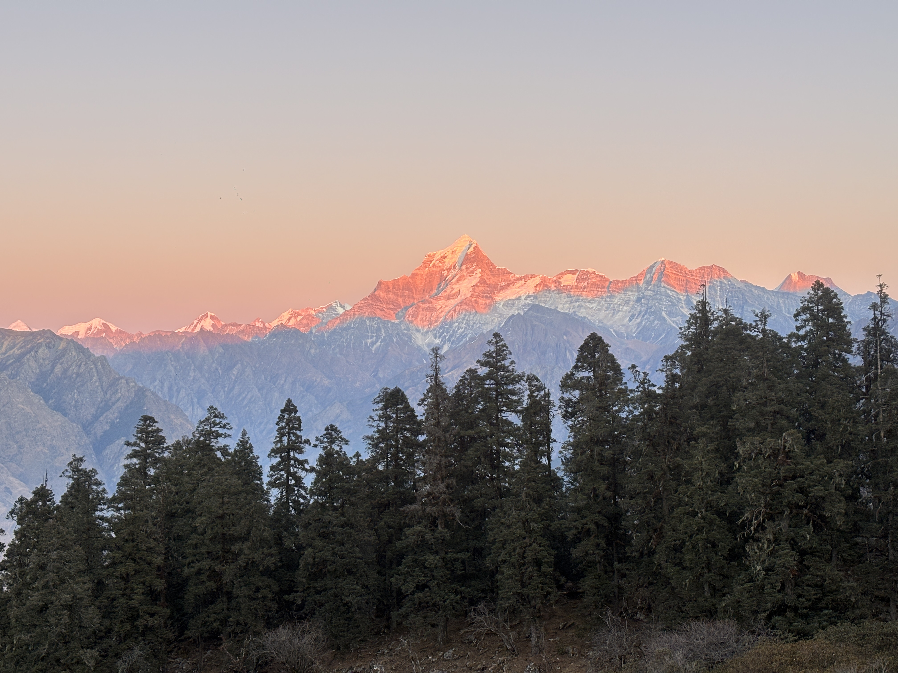
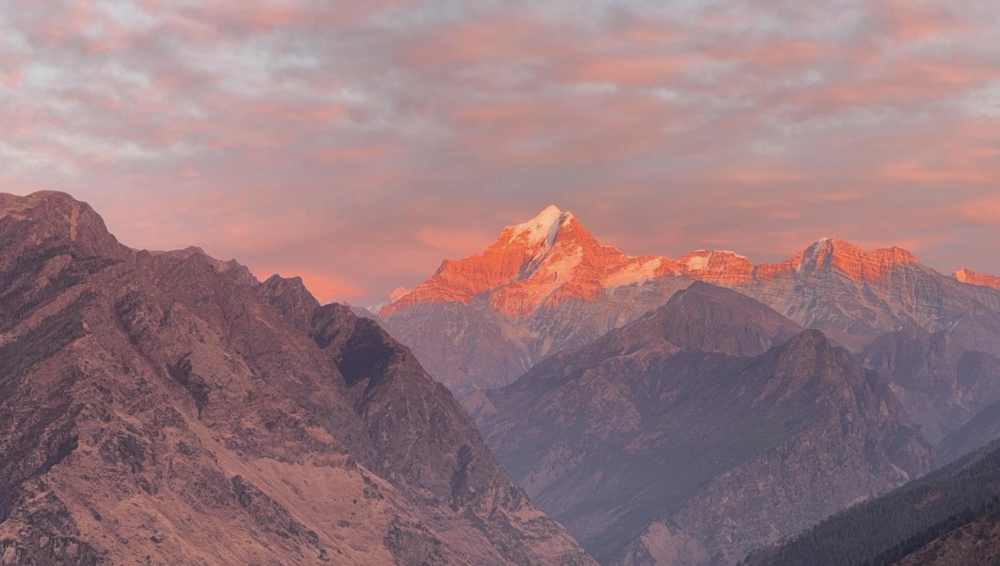

Shiny Rays on
Dronagiri.
It started with the shiny rays hitting Mt Dronagiri early in the morning. And then the smiles of the villagers. The mooo on the path. The puppies — sniffers, friendly, completely unbothered — following us wagging its tail. The trail was brown. There was a slight breeze, a chill that pressed gently against your face and stayed there.
And then came the alpine glow. There is a quote about mountains — that you can look at mountains for so long and still not be done. Which is exactly it. You can stare at Mt Dronagiri for so much time that it simply passes, quietly, without your permission. It stands there, strong and grounded, and the time just goes.


A Bedsheet
Filled with Stars.
The night starts. The stars appear in the open sky. You might have seen the sky moving — but have you ever seen a bedsheet filled with stars moving above your head, filled with constellations, the dark sky with the brightest stars, the cold breeze freezing your body meanwhile?
Lying under the stars will always be my favourite thing to do.

Woke up the next morning excited to see mountains again. I feel lucky to see that. And then the journey began to the next campsite — and on this path, so many things. The small streams of water crossing the trail. The tiny temples. The mules carrying luggage, unbothered, doing what they have always done. The dogs following us, tails wagging.
Me handing out biscuits to those dogs—by then, I was convinced this humble snack had quietly earned its place as the unofficial treat of the Himalayas.
Then the steep path — it was like a sliding in the sand competition. It was genuinely fun. And then the forest area filled with olive green grass and mosses and the tall pine trees standing there in stillness, and the breeze with it. It felt unreal. I was just walking and I found a spot — there was something about the trees there. It was fascinating.
The path next was with boulders. It's just the process of loving the path you're on — on the way to reaching the campsite. And then, the first glimpse: Hathi Parvat and Ghoda Parvat. Both of them appearing at the same time, like they had been waiting to be noticed.

180 Degrees
of Mountains.
We reached the campsite. And it was like — 180 degrees, filled with mountains. Including Hathi Parvat, Ghoda Parvat, Pangarchulla, Dronagiri, Kamet, Trishul, Nanda Devi. All of them, right there, just standing.
That evening I got to witness an epic alpine glow on all these mountains. The orange colour turning into light purple in the sky. That feeling cannot be expressed. At that time you feel free. You feel alive. You are living. You are present. It's just one of the most fascinating things to witness in your life.

Water Freezing.
The Moon. Then the Stars.
At night the water started freezing at these temperatures. The streams started freezing. The only things you were able to see in the dawn were the moon and the pine trees. Then the stars appeared later to accompany the moon — staying up and playing around in the dark, talking to strangers who very quickly stop feeling like strangers at all.